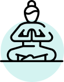
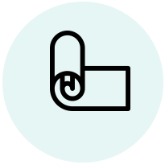
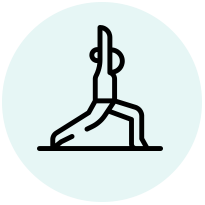
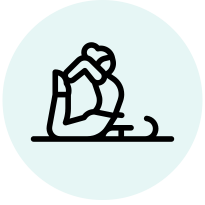

Tips que te ayudarán en la práctica
Estos consejos serán de mucha utilidad para
tus inicios

Elección de estilo
Cada persona es distinta y cada momento de la vida de la misma persona tiene sus
características. Para elegir el tipo de Yoga que más nos conviene, es necesario primero tener una
actitud de escucha consciente hacia nosotros mismos, segundo evaluar objetivamente nuestras necesidades y
posibilidades anímicas y fisiológicas, y tercero informarnos qué tipo de Yoga existen y cuál es el más
indicado para nuestra condición física.

Vestimenta
Utiliza ropa que te permita moverte, que sea cómoda y que esté en buen estado. Lo
recomendable es vestir ropa suelta o de materiales suaves y flexibles, como el algodón y la licra.
La camisetas pueden ser sueltas o ajustadas, sin mangas, de manga larga o corta, da
igual. En yoga practicamos las posturas descalzos porque necesitamos un contacto firme con la tierra
pero en invierno puedes usar medias.

Estado del cuerpo
Tener una actitud de escucha consciente hacia nosotros mismos significa reconocer que
nuestro cuerpo nos dice muchas cosas. Es necesario escucharlo. Ser realistas. Si vamos a una clase
demasiado dinámica de yoga y salimos cansados, doloridos, o excitados ese tipo de yoga no es para
nosotros. Si vamos a una clase de raja yoga meditativo y sentimos una ansiedad infinita y ganas de
que termine pronto, ese yoga no es para nosotros.
Elementos
Existe una amplia variedad de elementos y a
distintos precios. Para que tengas una noción general sobre los accesorios de trabajo de yoga, a
continuación, te los expondremos. Tené en cuenta que algunos son básicos y otros dependerán del tipo
de yoga que practiques y de las indicaciones específicas de tu docente. Los elementos necesarios
son: esterilla o colchoneta, correa o cinturón de yoga, bloque de yoga y una toalla